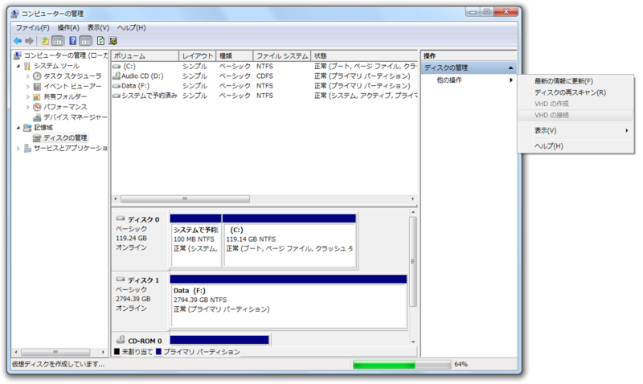

Windows 8 Consumer Preview のシステム要件
公開日：

VHD 作ってるあいだ暇なので、その間に Windows 8 Consumer Preview のシステム要件を再確認。
Windows 8 Consumer Preview は、Windows Vista と Windows 7 が動作するのと同じハードウェアで問題なく動作します。
システム要件
- プロセッサ: 1 GHz 以上
- RAM: 1 GB (32 ビット) または 2 GB (64 ビット)
- ハード ディスクの空き領域: 16 GB (32 ビット) または 20 GB (64 ビット)
- グラフィック カード: Microsoft DirectX 9 以上のグラフィックス デバイス
ここらへんは現行のPCで何ら問題ない。Microsoft が重いOSを作って、Intel が早いCPUを売る Wintel な関係*1はもう終わったんだなぁ。
特定の機能を使用するための追加要件:
- タッチを使う場合は、マルチタッチに対応しているタブレットまたはモニター
- Windows Store にアクセスし、アプリをダウンロードして実行する場合は、アクティブなインターネット接続と 1024 x 768 以上の画面解像度。
- アプリをスナップする場合は、1366 x 768 以上の画面解像度
問題は最後か。現行のPCにはなかなかこれを満たすタブレットがない。あと、16:9 が基本なんだね……個人的には4:3が好みなのだけど。追加要件には含まれていないけれど、もちろんセンサー系もバッチリ載っけといてほしい。
Windows 8 におけるセンサーのサポート - Building Windows 8 - Site Home - MSDN Blogs
*1:自分で言うのもなんだが、死語だよね